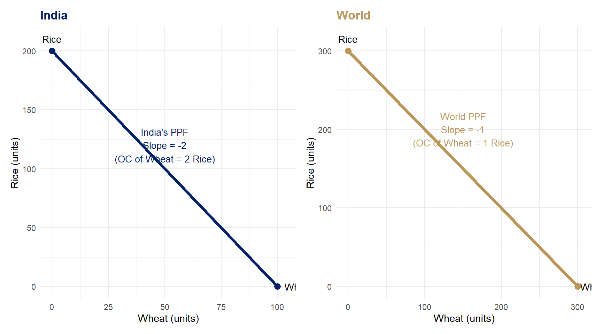

library(ggplot2)
library(patchwork)
p1 <- ggplot() +
geom_segment(aes(x=0, y=200, xend=100, yend=0),
color="#012169", linewidth=1.5) +
geom_point(aes(x=0, y=200), color="#012169", size=3) +
geom_point(aes(x=100, y=0), color="#012169", size=3) +
annotate("text", x=50, y=120,
label="India's PPF\nSlope = -2\n(OC of Wheat = 2 Rice)",
color="#012169", size=3.5, hjust=0.5) +
annotate("text", x=103, y=0, label="Wheat", size=3.5, hjust=0) +
annotate("text", x=0, y=210, label="Rice", size=3.5, hjust=0.5) +
labs(title="India", x="Wheat (units)", y="Rice (units)") +
theme_minimal(base_size=11) +
theme(plot.title=element_text(color="#012169", face="bold"))
p2 <- ggplot() +
geom_segment(aes(x=0, y=300, xend=300, yend=0),
color="#B9975B", linewidth=1.5) +
geom_point(aes(x=0, y=300), color="#B9975B", size=3) +
geom_point(aes(x=300, y=0), color="#B9975B", size=3) +
annotate("text", x=150, y=200,
label="World PPF\nSlope = -1\n(OC of Wheat = 1 Rice)",
color="#B9975B", size=3.5, hjust=0.5) +
annotate("text", x=303, y=0, label="Wheat", size=3.5, hjust=0) +
annotate("text", x=0, y=315, label="Rice", size=3.5, hjust=0.5) +
labs(title="World", x="Wheat (units)", y="Rice (units)") +
theme_minimal(base_size=11) +
theme(plot.title=element_text(color="#B9975B", face="bold"))
p1 + p2